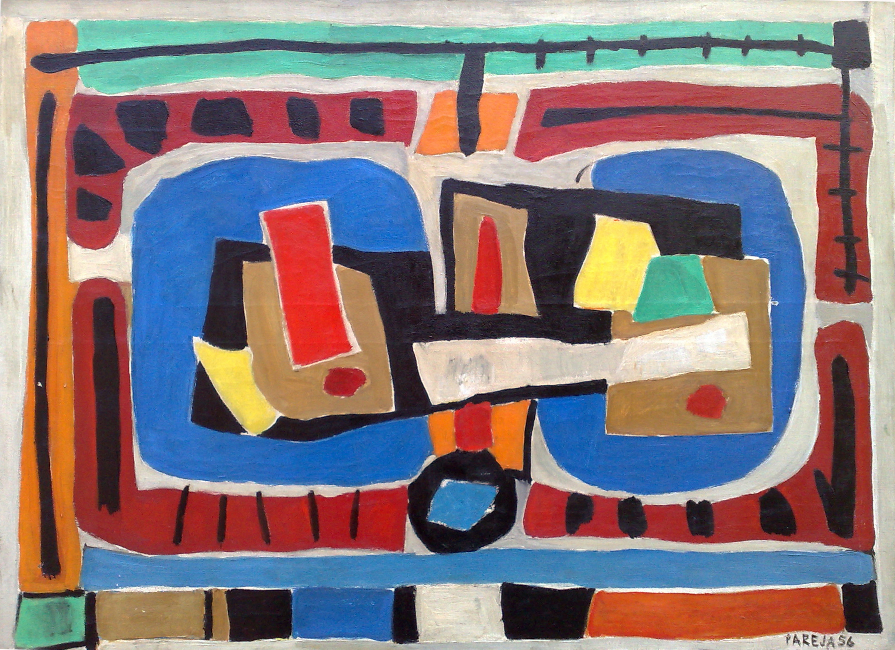
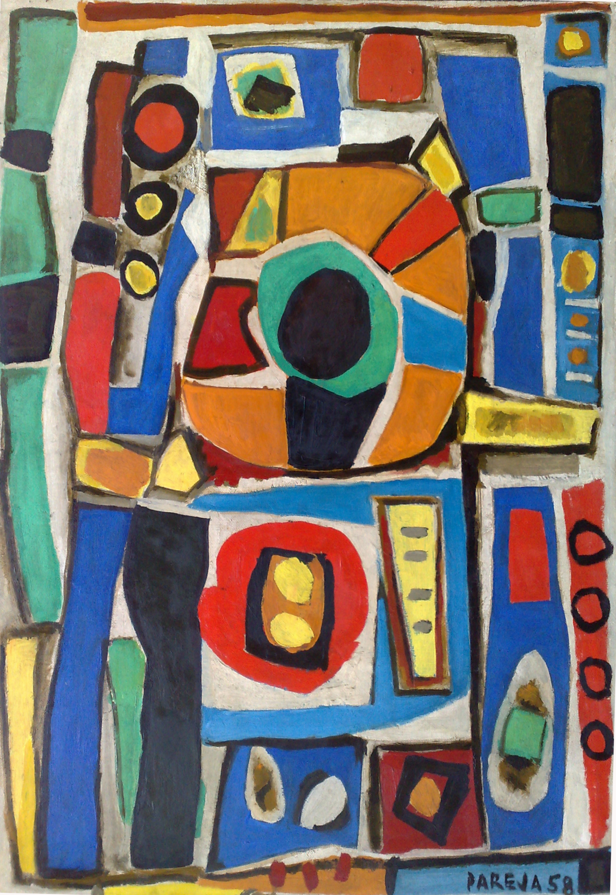

Miguel Ángel Pareja encontró en la pintura su principal medio de expresión. Pero aún faltaba algo, algo que cambiaría su forma de ver la pintura. Cuando tenía 46 años viajó a Europa a estudiar la técnica de mosaico. Estudió en el taller de grandes artistas que lo llevaron a descubrir el mural. Es así que junto a su pintura abstracta surge lo más importante de ella: el mural.
Mural
Mosaico
Propuesta
COMPOSICIÓN MURAL
Sus pinturas abstractas contenían una idea. La idea de los murales que quería realizar. Por eso muchas de sus pinturas abstractas llevan el nombre de composición mural. Estas composiciones murales eran bocetos para los murales que construiría.


El mural significaba llevar el arte a todos los hombres, mujeres y niños a través de los muros y fachadas de la ciudad. Miguel Ángel Pareja pensaba de esta manera:
“Si pintar un cuadro es como abrir el propio paraguas para protegerse de la lluvia;
pintar un mural es como cerrar una cúpula para proteger a la comunidad toda”.
Nos cuenta Silvestre Peciar, artista que fue alumno y amigo de Pareja que "... con el cuadro de caballete, se va su protagonista: el gaucho, y toma su lugar la forma pura. Pero el gaucho no desaparece; diríamos que el gaucho se hizo color."
Miguel Ángel Pareja creía que el arte debía promover la relación entre los hombres, por ello era imprescindible que la obra de arte estuviese integrada en los espacios públicos, en lo cotidiano. El mural significaba la posibilidad de lograr este objetivo.
MOSAICO
El mosaico es una composición realizada con pequeñas piezas cuadradas de colores, llamadas teselas. Las hay de mármol de colores como también de barro cocido vidriadas. Para armar composiciones a veces las teselas se recortan para que adopten el contorno preciso de las figuras a realizar. Otras veces se compone solamente con la tesela cuadradita.
El mosaico es una técnica mural que logra figuras vistosas, que se mantiene inalterable frente al paso del tiempo. La fuerza de sus colores no se degrada. Miguel Ángel Pareja estuvo en la ciudad de Rávena en Italia estudiando el mosaico Bizantino. Tuvo entonces la oportunidad de contemplar y aprender en una ciudad que posee los más increíbles mosaicos del mundo. Los mosaicos de Rávena tienen hasta 1.600 años de antigüedad. A continuación compartimos este video cortito sobre los grandes murales de Rávena.